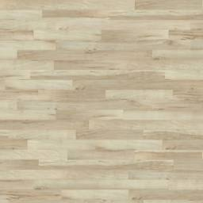
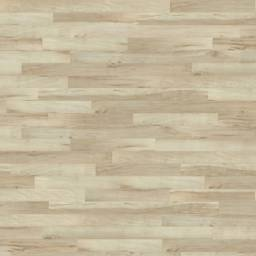

| Light Color (Light Diffuse Term): |
|
Sphere Color (Material Diffuse Term): |
|
||||
| Light Ambient Term: | 0.03 | Material Ambient Term: | 1.0 | ||||
| Light Specular Term: | 1.0 | Material Specular Term: | 1.0 | ||||
| X: | 0 | Shininess: | 230 | ||||
| Y: | -1.0 | Background Color (gl.clearColor): |
|
||||
| Z: | -1.0 | ||||||

 
